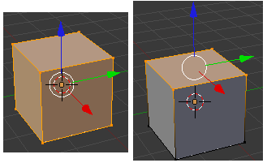

Section 12: Introduction to Blender
Sections 12 through 14 describe Blender (www.blender.org), a program for 3D modeling and animation. There is no programming in these sections. Instead, we'll be looking at 3D graphics concepts in the context of an application program that implements and uses them. Although it is free software, Blender is a real program that can be used to produce professional graphics and animation. It has been used to produce some short films including several "open movies" that have been created by world-wide groups of volunteers, such as Sintel and Elephants Dream. Blender is available for Windows, Mac OS, and Linux and can be downloaded from its web site.
The material presented here is about Blender 2.6, although much of it should apply to other versions. It is meant as a brief introduction, with enough information to let you experience some of Blender's capabilities and to see how it uses 3D graphics concepts that were discussed in other sections, but it only scratches the surface of what Blender is capable of. Most of the content is taken from lab writeups from a graphics course that I taught a few years ago. For more detailed information about using blender, you might consult the on-line manual.
Blender uses a single window, divided into sections. The sections are referred to as "windows," although they are not operating system windows. Sometimes I will call them "panels." The center section is the main work area, where you can construct a 3D world. The work area is called the 3D View window. The 3D view is surrounded by other windows that contain a huge number of controls. The window is very configurable. I will be talking about the default configuration. At startup, the 3D world looks like this:
The initial world contains a cube, which is the only actual object in the scene. The depiction of the world also contains visualizations of a camera and a light source, as well as few other features to help you orient yourself in the 3D world and to manipulate it.
Note: Blender does not ask you whether you want to save your work when you quit. It does, however, save a copy of its state. If you quit accidentally, use the "Recover Last Session" command in the file menu to pick up where you left off. If Blender or the system crashes, use "Recover Auto Save" in the File menu to get back most of your work. There is also a "Recover Last Session" button in the splash screen that is shown when Blender starts up.
Changing the View
The 3D View window shows you a two-dimensional projection of a three-dimensional world. You need to be able to change the view, to look at the world from a different viewpoint. This can be done using the mouse or using the keys on the numeric keypad. (The keypad is the group of keys to the right of the keyboard.) The mouse cursor must be in the 3D window for key presses to be sent to that window! This does not follow your usual GUI experience.
| Changing the View with the Mouse | |
| Drag with middle mouse button — Rotate the view, using a "trackball" style interface. | |
| Hold down Shift, and drag with middle mouse button — Translate the view (up, down, left, right). | |
| Hold down Control, and drag with middle mouse button — Zoom the view. Move mouse up to zoom in, down to zoom out. You can also zoom in and out with the scroll-wheel feature of the mouse. | |
| Changing the View with the Keypad | |
| Keypad 0 | View from the camera. Hit Keypad 0 again to return to the user's point of view. The camera view is important because it's what you will see when you render an image. |
| Keypad 7 | View from "above," perpendicular to the xy-plane |
| Keypad 1 | View from "front," perpendicular to the xz-plane |
| Keypad 3 | View from "side," perpendicular to the yz-plane |
| Keypad 2,4,6,8 | Rotate the view. |
| Keypad +,- | Zoom in and out. |
| Keypad 5 | Switches between "orthogonal" and "perspective" projection. |
The initial view is a perspective projection of the world from a point that lies off all three coordinate axes. For working on the world, however, it's generally better to use an orthogonal projection. Use the "5" key on the keypad to switch between projection types. Use the keypad "1", "3", and "7" keys to switch between projections onto the xz-, yz-, and xy-planes. These are probably the most useful views for modeling, and checking out the world. Using all three projections can give you a good idea of the 3D positions of the objects in the scene. The camera view (Keypad "0") can also sometimes be useful for modeling.
Adding, Selecting, and Deleting Objects
Changing the view does not modify the contents of the world. To do that, you have to add objects to the world. This is where the 3D cursor comes in. The 3D cursor is shown at the right. A newly added object is always added to the world at the position of the 3D cursor.
You have to position the 3D cursor before adding the object. The 3D cursor is positioned by clicking on the 3D View window with the left mouse button. The 3D cursor exists in three-dimensional space. You can't tell where it is by looking at the world from just one point of view. Typically, you would check the position of the 3D cursor from several viewpoints by using the Keypad 1, 3, and 7 keys to switch between viewpoints.
Another way to position the 3D cursor is with the snap menu, which you can call up by pressing SHIFT-S while the cursor is in the 3D Vew window. This menu contains commands for positioning the cursor as well as for positioning objects. For example, use "Snap To Center" to move the 3D cursor to the point (0,0,0).
Once you have the 3D cursor in position, use the "Add" menu to add an object to the world. Assuming that the mouse cursor is over the 3D view, you can pop up the "Add" menu at the mouse position by hitting Shift-A; you can also find it in the menu bar at the top of the Blender window. Click on "Mesh" in the Add menu. This gives a sub-menu containing various mesh objects. ("Mesh" just means that it's made up of polygons; I advise sticking to mesh objects at first.) Various mesh objects are available. For example, A UVSphere is a sphere divided into stacks and slices by lines of latitude and longitude. An ICOSphere is divided into triangles. A Plane is actually just a rectangle. (When you first start Blender, the object in the default scene is a mesh cube.)
 When adding certain types of objects, there are some options you can change.
When you add the object, a panel containing these options
appears in the lower left region of the window.
The image at the right shows the panel for a Mesh UVSphere.
For a UVSphere, you can change the number of Segments and Rings,
which are the number of subdivisions around the sphere and from
top to bottom, what we have been calling slices and stacks.
When adding certain types of objects, there are some options you can change.
When you add the object, a panel containing these options
appears in the lower left region of the window.
The image at the right shows the panel for a Mesh UVSphere.
For a UVSphere, you can change the number of Segments and Rings,
which are the number of subdivisions around the sphere and from
top to bottom, what we have been calling slices and stacks.
The buttons for numerical input are examples of Blender's funny input buttons. Here's how to use such buttons: You can click the button, type in a value, and press return. You can click the arrows at the ends of the button to increase/decrease the value. Or you can drag the mouse left-to-right or right-to-left on the button to change the value.
Objects can be selected. When you apply an edit operation to the 3D View window, it affects the selected object or objects. When you add an object to the scene, the new object is automatically selected. You can select an object by right-clicking it. Selected objects are shown outlined in orange, and a set of red/green/blue axes is shown at the center point of the object. You can select multiple objects by holding down the Shift key as you right-click the objects. When you do this, the little set of red/green/blue axes move to the center of the group of objects—and if you transform the group as a whole, the transform is relative to this center. When multiple objects are selected, certain operations only apply to the most recently selected object. That object is shown in a slightly brighter orange.
The red/green/blue axes are called the manipulator. You can move the selected object or objects in the direction of the coordinate axes by dragging the arrow heads on the manipulator axes.
To delete selected objects, just hit the X key or the Delete key. You will be asked to confirm the deletion. (Remember that the mouse cursor must be in the 3D window for it to get keyboard commands!)
As you modify the world, you can undo most operations by pressing Control-Z, including adding and deleting objects. Conrol-Shift-Z is an Undo operation.
Transforming Objects
You can translate objects (that is, move them around), you can scale objects (this is, change their sizes), and you can rotate objects. This is an essential part of modeling. To apply one of these operations to the selected object(s), use a combination of keyboard and mouse. Note that you do not simply click-and-drag an object to move it! Instead, select the object or objects you want to transform by right-clicking them, then apply the transformation as follows:
| Transformations | |
| Translation | Press the "G" key. (G stands for "grab".) Move the mouse without holding down any button. You can move the object in the plane of the screen only. Click with the left mouse button to finish. Click with the right mouse button to abort. (Hitting return will also finish; hitting Escape will also abort.) After hitting the "G" key, you can hit "X", "Y" or "Z" to constrain motion to one axis. As mentioned above, you can also use the manipulator to translate the object. (Alternatively, you can start moving an object if you just right-click and start dragging. However, releasing the right-mouse does not end the move! You still have to end it as described above.) |
| Scaling | Press the "S" key. Without holding down any mouse key, move the mouse towards or away from the object to change its size. The size changes in all three dimensions. Click with the left mouse button to finish. Click with the right mouse button to abort. After hitting "S", you can hit "X", "Y", or "Z" to scale the object in the direction of one axis only. |
| Rotation | Press the "R" key. Without holding down any mouse key, move the mouse to rotate the object around a line perpendicular to the screen. Click with the left mouse button to finish. Click with the right mouse button to abort. If you hit "R" a second time, you can freely rotate the object. After hitting "R", you can hit "X", "Y", or "Z" to rotate the object about the specified axis. |
Whether rotating, scaling, or translating, you can hold the Control key down to limit the changes, such as to integral amounts while translating or to multiples of ten degrees while rotating. Also, you can use the arrow keys to make small adjustments.
All these operations can be applied to the camera, just as they are applied to any other object. You can move and point the camera to get the view of the world that you want to see when you render an image of your world.
Note that rotations and scaling are relative to the "center" of the object, the point where the axes are drawn. This center point is not necessarily at the geometric center of the object.
You can get yourself real confused if you don't remember to press the left mouse button to complete a transformation operation.
Understanding Edit Mode
Ordinary transformations (and many other operations) are applied to an object as a whole. Sometimes, however, you want to work on the vertices, edges, or faces of an object. For that, you use edit mode.
To enter edit mode for the selected object, press TAB. When in edit mode, press TAB to exit edit mode. In edit mode, you can select individual vertices and groups of vertices. You can select a face by selecting all the vertices of that face. You can select an edge by selecting both vertices of that edge. You can scale, rotate, and translate selected elements in the usual way, with the S, R, and G keys.
 In edit mode, selected vertices and faces are orange. The first picture on the right shows a cube in edit mode with all vertices selected. In the second picture, only the vertices of the top face are selected.
When you first enter Edit Mode for a mesh object, all of its vertices are selected. Pressing the "A" key will deselect all vertices. If you press the "A" key when no vertices are selected, all the vertices will be selected. You can select a vertex by right-clicking. Hold down the shift key while right-clicking to select multiple vertices. Shift-right-click a selected vertex to de-select it. There is a way to add a group of vertices to the selection: Hit the "B" key. You can then draw a "box" by left-clicking and dragging with the mouse. Vertices within the box are added to the set of selected vertices. This is an easy way, for example, to select all the vertices at the top of a cube. You might have to change the point of view several times while selecting the vertices and performing operations on them.
There are a lot of things you can't do in Edit Mode, so don't forget that you have to press the TAB key to get out of Edit Mode.
By the way, the "A" and "B" keys can also be used outside of Edit Mode for selecting sets of objects.
Introduction to Lights
There is already one light in the default scene, which you can drag around so that it best illuminates your objects. The default light is shown at the right; it has been selected so that it is shown in orange. The black tail (barely visible) connects the light to the xy-plane, to make it easier to see its 3D position. You can also add additional lights, using the "Lamp" submenu in the "Add" menu. "Lamp" is Blender's term for "light." The lamp appears at the position of the 3D cursor. You might have to add several lamps to properly light your scene.
There are several kinds of lamp in the "Lamp" submenu. A "Point" lamp gives off light in all directions. The light in the initial scene is a point lamp. A "Sun" means light shining in parallel rays from some direction, indicated by a line drawn from the lamp. A "Spot" is a spotlight that gives off a cone of light, which you can aim at the objects you want to illuminate. Change the direction of a sun or spot by rotating it.
Adding a Material to an Object
The default color of an object is gray. To change this, you have to add a "material" to the object and set the properties of that material. (The cube in the start-up world has a material; new objects that you add don't.) To work on materials, use the properties editor panel, which you will see to the right of the 3D view. This panel allows you to set all kinds of properties. The top of that panel has a row of buttons that select which group of properties you want to work on. The buttons that appear in this row depend on what kind of object is currently selected, although some are always present. Here are the buttons that are shown when the selected object is a mesh:
In this picture, the materials button has been clicked. With the materials button selected, the rest of the editor panel, below the header, is filled with controls for setting the material properties of the selected object. Most of the controls don't appear until a material has been added to the object:
Materials have other properties in addition to color. Most commonly used are transparency and shadows. You can make an object transparent and set its alpha value to control the degree of transparency. You can set whether it casts shadows and whether it can be shadowed by other objects. (Shadows add realism, but complete realism is not always what you want.)
Adding a Texture to an Object
A texture makes the color of an object vary from point to point. The colors could be copied from an image, effectively painting the image on the surface of the object. This is called an image texture, the only type of texture that we considered in the previous section. Alternatively, the color can be computed algorithmically from the coordinates of the point. This is called a procedural texture.
A texture should only be added to an object that already has a material, since texture is considered to be part of the material. To add a texture to an object, select the object (and add a material if it doesn't already have one!). Click on the texture button in the header of the properties editor panel, as shown in the above illustration. If the object already has a texture, you will be able to edit it. Otherwise, click the "New" button. Once you've added the texture, a "Type" popup menu will appear where you can choose the type of texture that you want to use.
One type of texture is an Image texture. If you choose that type, you will see a "Load" button that you can click to select the image that you want to use as a texture.
Most of the remaining texture types are procedural textures. You might try "Marble", "Clouds", and "Wood". When you select one of these, controls appear that allow you to modify the appearance of the texture. The Marble pattern, for example, usually looks better if it's set to "Sharp" or "Sharper" rather than "Soft."
The Clouds, Wood, and Marble textures make patterns of two colors. One color is the material color of the object. The other is set as a property of the texture (look for the color patch under "Influence" in the texture properties panel). By default, the second color is an ugly magenta, which you will want to change.
Basics of Animation
Blender uses keyframe animation. That is, you set the value of a property in several "key" frames, and Blender will interpolate the value between key frames. Exactly how the interpolation is done is determined by a set of "F-curves," which you can edit to completely control the interpolation (and extrapolation beyond the key frames).
The timeline panel at the bottom of the Blender window is related to animation:

On the bottom of the timeline panel, you see the starting frame, the end frame, and the current frame of the animation (1, 250, and 20 in the picture). These are numerical input buttons that you can modify. Next to the frame numbers is a set of playback controls, which run the animation in the 3D View window. The start and end frames are used when you use the playback buttons. They also determine what frames will be included when you render an animation.
Above the frame numbers and playback controls is the timeline itself. The thicker, green line marks the current frame on the timeline. Yellow lines mark frames that have been set as key frames.
You can drag the green line to change the frame number!
To animate an object, select the object and hit the I key to insert a key frame. A pop-up will allow you to select the properties for which you want to insert a value in the key frame. Note that "LocRot" means to insert values for both Location and Rotation, and "LocRotScale" means to insert values for all three properties. After inserting one key frame, change the frame number (by dragging the green line in the timeline panel or editing the number button that shows the current frame number), move or rotate or scale the object to the values that you want for the new keyframe, and hit I again. As you drag the green line back and forth, you can see how the object animates.
You can also animate many of the properties in the properties editor panel. For example, to animate the diffuse color, set the frame number, point the mouse at the diffuse color in the material properties editor, and hit I. Change the frame number and repeat, and so on. You can also insert a key frame by right-clicking a property in the editor and selecting "Insert Keyframe" from the pop-up; if a key frame already exists, the pop-up has an entry for deleting it.
Saving an Image File
The 3D window shows positions, sizes, and colors of your objects. To see a fully rendered scene from the point of view of the camera, hit F12). To dismiss that view, hit F11. There are are also commands in the Render menu that do the same thing. Many aspects of the scene, including textures, transparency, and shadows, do not appear in the 3D View window. To see them, you have to render an image.
When you render, an image is created but it is not saved anywhere. To save it, use the F3 key while the rendered image is on screen, or use the "Save as Image" command from the "Image" menu at the bottom of the panel that contains the rendered image. The size and format of the image is set in the properties editor panel, with the "Render" button selected. (It looks like a little camera.)
When you render an animation, the output is automatically written to disk. The default is to write each frame as a separate image, using names such as 0001.png for frame number 1. The files are created, by default, in the /tmp directory. The directory, output, and file name can be set, along with the output format, in the Render properties editor. There will be more information about animation and saving animations in a later section.